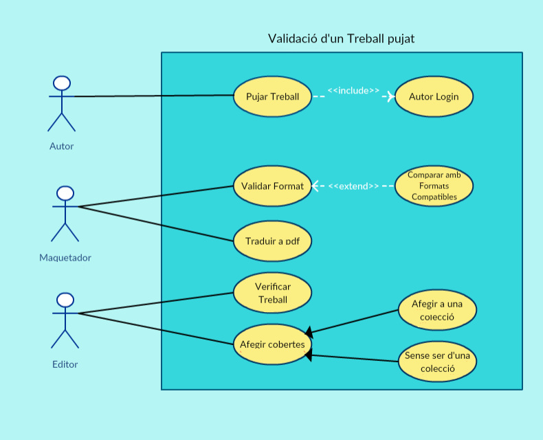

TASCA 1: Elaboració de casos d'ús
Use case: Purchase bookContext: Un usuari vol comprar un dels treballs de la web
Actors Primaris: Usuari(client)
Actors de suport: Online payment service/Messenger service (Maquetador)
Precondició: L'usuari pot seleccionar l'opcio de comprar un treball/llibre de la web.
Successful postcondition: L'usuari compra el treball desitjat.
Unsuccessful postcondition: L'usuari no ha pogut comprar el treball desitjat.
Basic Flow:
- L'usuari logueja a la web
- L'usuari selecciona el treball desitjat.
- L'usuari selecciona la opcio de comprar el treball.
- El sistema obre una finestra amb la pagina del servei online de pagament.
- L'usuari compra el treball.
- El sistema tanca la finestra del servei de pagament online.
- L'usuari selecciona la opcio de descarregar el treball comprat.
- El sistema verifica la compra.
- L'usuari descarrega el treball.
1.a L'usuari no esta registrat o te algun problema amb les seves dades.
1.a.1 Executar el cas d'us: "Validate as user".
2.a L'usuari busca el treball mitjan¸ant cerca avan¸ada.
2.a.1 Executar el cas d'us "Cerca avan¸ada d'un treball".
2.b L'usuari selecciona un treball de la llista de col.leccions.
2.b.1 Anar al pas 3.
4.a No es pot obrir la finestra a la pagina del servei de pagament.
4.a.1 Enviar un missatge d'error a l'usuari i tornar al pas 3.
8.a Hi ha hagut un error en la verificació.
8.a.1 Executar el cas d'us: "Asistencia al client".
Use case: Validate uploaded Work.
Context: S'ha de validar per a poder publicar un treball que ha estat pujat.
Actors Primaris: Editor
Actors de suport: Layout Designer (Maquetador)
Precondició: Un autor ha pujat un treball al web.
Successful postcondition: La feina ès validada i passa a la fase d'afegir cobertes, etc.
Unsuccessful postcondition: La feina no ès validada i per tant no ès pubblicada al web.
Basic Flow:
- Una nou treball ès pujat al web.
- El sistema detecta el format del treball pujat.
- Aquest format ès comparat amb la llista de formats compatibles de l'editorial.
- El maquetador verifica el format (Ha de ser pdf per poder passar a la fase 5).
- L'editor verifica el treball.
- L'editor decideix si aquest treball s'afegeix a alguna de les coleccions de l'editorial.
- La feina està llesta per a que se li afegeixin les cobertes i es publiqui.
1.a No hi ha cap treball pujat.
1.a.1 Esperar a que s'afegeixi un treball.
2.a No es pot determinar el format
2.a.1 Acabar el proces per a aquesta feina i enviar un missatge d'error.
3.a El treball te un format que no ès suportat.
3.a.1 Acabar el proces per a aquesta feina i enviar un missatge d'error.
4.a El format es suportat pero no es pdf.
4.a.1 Executar el cas d'ús: "Translate work to pdf".
5.a El layout design no ès vàlid.
5.a.1 Tornar al pas 4.
6.a L'editor no valida el treball.
6.a.1 Finalitzar el procès.
TASCA 2:
USE CASE: Purchase book
- Client
- Online Payment Services
- MeltingPot
- OurCode
USE CASE: Validate uploaded work
- Autor
- Layout Designer
- Editor
- MeltingPot
- OurCode
TASCA 3: Actors i casos d'us del sistema
- Purchase book (Actors: Client, Online Payment Services)
- Validate uploaded work (Actors: Autor, Layout Designer, Editor)
- Validate as user (Actors: User)
- Cerca avan¸ada d'un work (Actors: User)
- Translate work to pdf (Actors: Autor, Layout Designer)
- Asistencia al client (Actors: Autor, Online Payment Services)
- Enviar donacio (Actors: User)
- Rate a work (Actors: User)
- Unlist work (Actors: Autor, Editor)
- Browse a work in HTML version (Actors: User)
TASCA 4: Diagrama
TASCA 5: Glossari
- MeltingPot: Petita editorial que vol millorar els seus serveis web. És la empresa que ha demanat aquest projecte.
- OurCode: Petita empresa de software encarregada de desenvolupar aquest projecte.
- Layout Designer: Maquetador. Encarregat d'ajustar el format dels treballs a l'estàndard adequat.
- Online Payment Services: Serveis de tipus PayPal que s'encarreguen de gestionar les operacions de compra / donacions i tot el que involucri transaccions económiques per internet.
- Autor: Persona que elabora els treballs que es publiquen a la pàgina web.
- Editor: Encarregat de revisar tots els treballs i decidir si es publiquen o no.
- Client: Persona que compra els treballs publicats per l'editorial.
- Pujar un treball: Acció que du a terme l'autor quan ha acabat de fer un treball i vol que la web el publiqui. Consisteix en que l'autor envia el seu treball a la web per a ser validat i publicat.
- Colecció: Agrupació de diverssos treballs que fa l'editorial pel fet de tenir coses en comú (temàtica, per exemple). Els llibres d'una mateixa colecció van numerats i tenen un format de cobertes comú.
- Publicar: Es considera que un treball ès publicat quan l'editorial li ha donat el vist i plau, li ha afegit les cobertes corresponents i està disponible perquè el client el pugui comprar.
TASCA 6: Obscure Points
- Interfície de la pàgina: disseny, organització, estil gràfic, estètica...
- Sistema de gestió dels comptes d'usuari: Mètode de registre, tipus d'usuaris, permisos que tenen els usuaris, seguretat....
- No s'especifica si cal mantenir alguna de les característiques de la web actual.
- Tot el relacionat amb els "Creative commons license". Quin tipus de documents, qui els podrà pujar, qui els podrà descarregar i amb quines limitacions.....
- No s'especifica bé si per a fer una donació a un autor cal haver comprat prèviament el llibre.
- No s'especifica si per a fer una valoració (escriure una ressenya / puntuar) cal haver comprat prèviament el llibre.
- No s'especifica si quan un autor puja un treball en un format no suportat d'ha d'eliminar directament el treball o si s'ha d'intentar convertir a algun dels formats suportats.